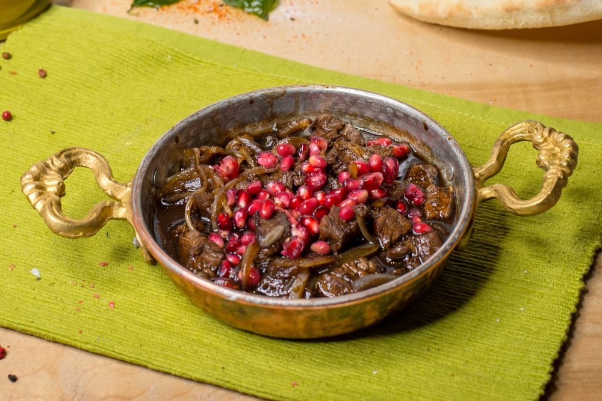

Ras asfour de vita

Dupa cum cred ca stie deja toata lumea Ras Asfour este un preparat specific bucatariei libaneze pregatit cu
fasiute de carne de vita in sos dulce acrisor de rodie
gata sa satisfaca papilele gustative pana si celor mai pretentiosi gurmanzi
Ingrediente
- 800 grame carne de vita
- 2 bucati ceapa rosie
- 1 bucata rodie
- 6 linguri sirop de rodie
- 200 mililitri apa
- 400 mililitri supa de vita
- 5 linguri ulei de masline
- 2 lingurite condiment Sumac
- 2 lingurite condiment Ras el hanout
- 2 lingurite chimion macinat
Mod de preparare
- Taiem carnea de vita (de preferat antricot sau mauschi) fasiute
- Intr-o tigaie punem 3 linguri de ulei de masline si calim carnea pentru aproximativ 15 minute la foc mediu
- Intre timp, taiem ceapa in bucatele mici si curatam rodia dupa care vom pune semintele rodiei intr-un bol
- Dupa ce am calit carnea, adaugam si ceapa cu cele 2 linguri de ulei de masline si lasam la sotat impreuna pentru 10 minute, la foc mic, spre mediu
- Dupa ce s-au scurs cele 10 minute, adaugam 200 ml de apa si lasam la gatit cam 10-15 minute, pana cand apa s-a evaporat aproape de tot. Condimentam cu sare si piper dupa gust
- Adaugam 3 linguri de sirop de rodii si amestecam, urmate de 200 de ml de supa de vita si condimentam cu sumac, condiment Ras el Hanout si chimion. Lasam la gatit pentru circa 10 minute. Suntem atenti ca supa de vita sa nu se evapore de tot, asadar recomand focul mediu
- Adaugam si restul de supa de vita impreuna cu cele 3 linguri de sirop de rodie si semintele de rodie si mai lasam la gatit aproximativ 10 minute la foc mediu spre mare. Potrivim de sare, daca mai este necesar si apoi servim ca atare sau impreuna cu bulgur, orez sau cous-cous